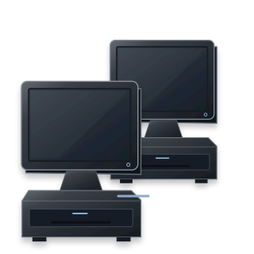
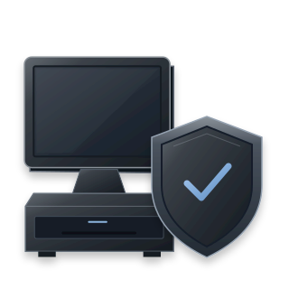
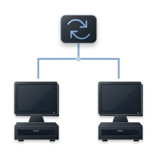
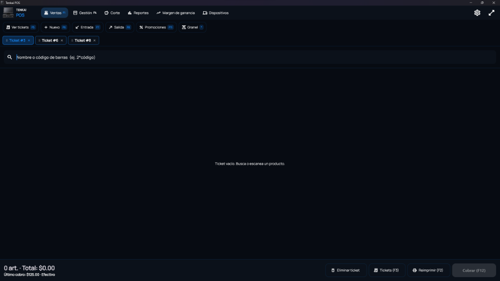
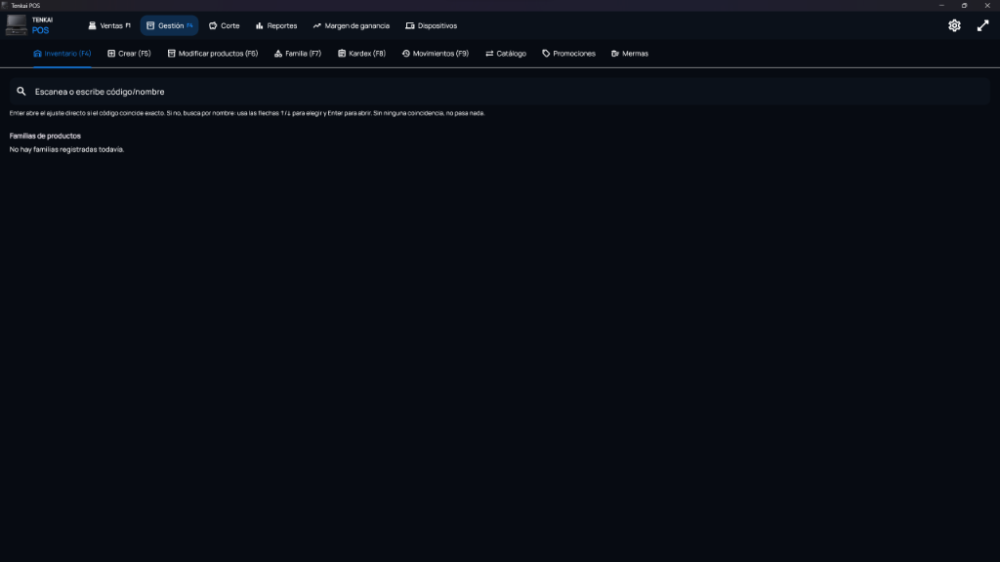
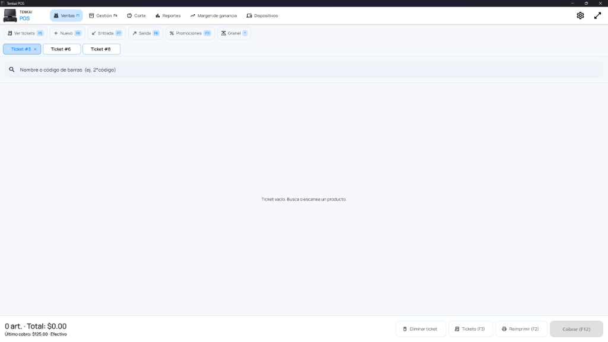
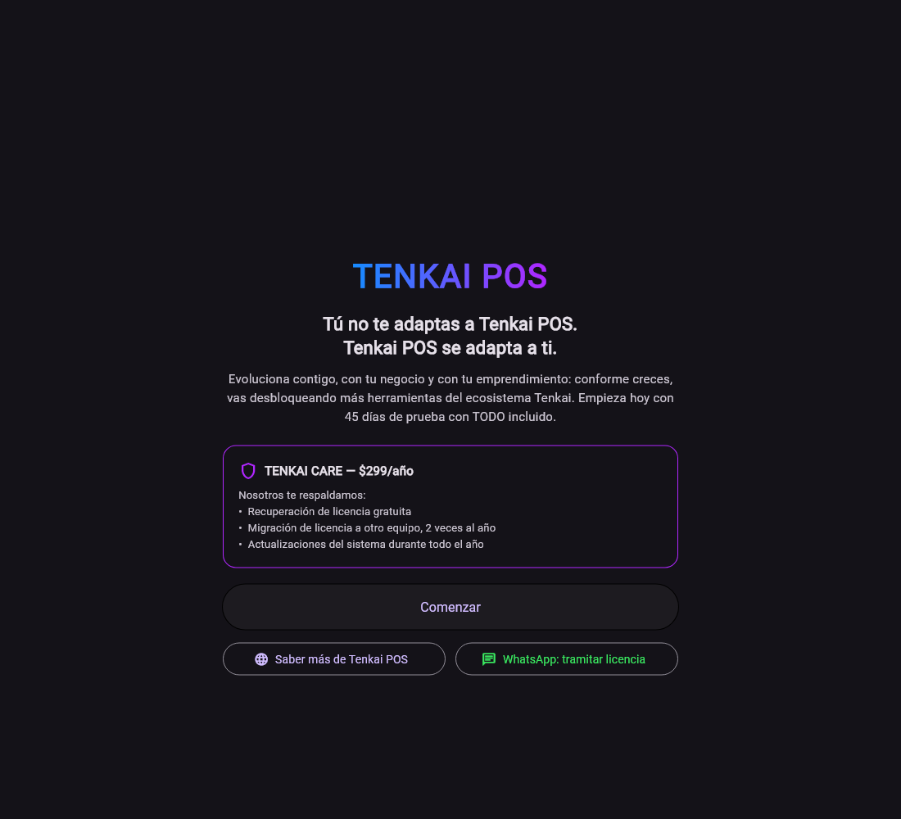
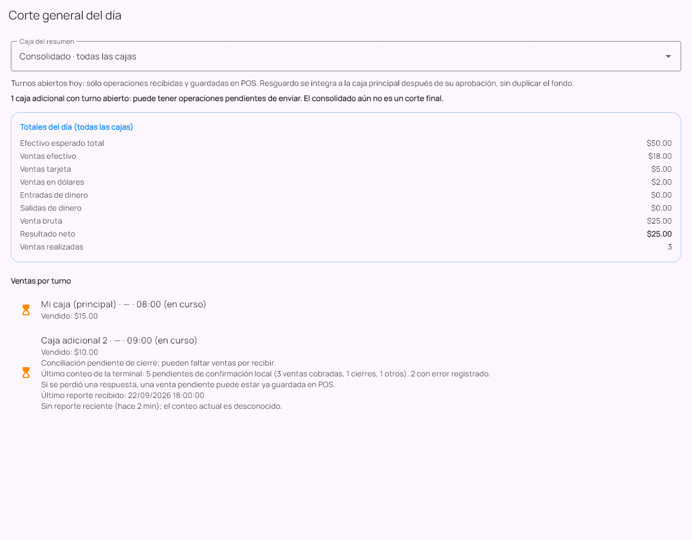
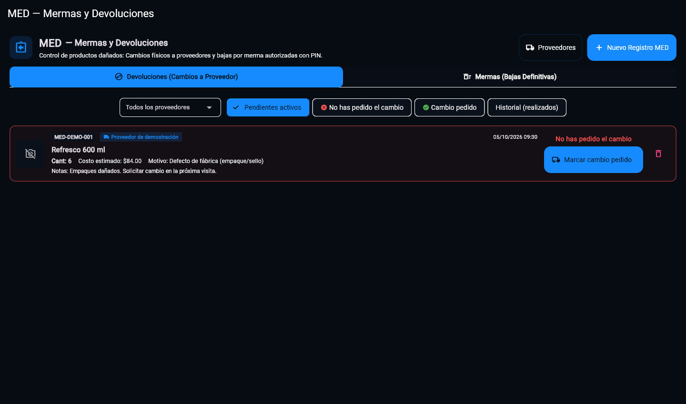
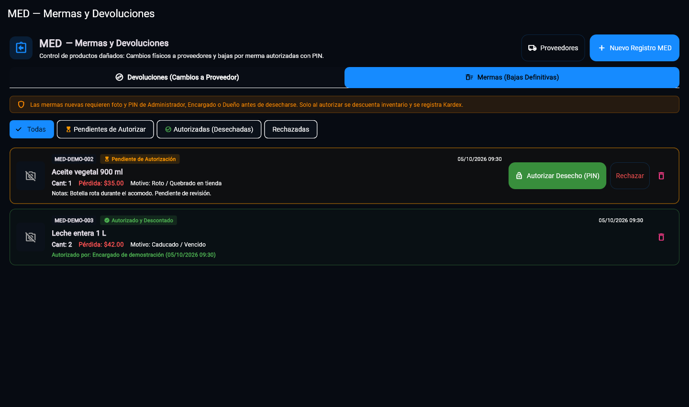

Cobra con orden
Escanea, busca por nombre y prepara varios tickets. Registra efectivo, tarjeta o pagos combinados.
Windows
Tenkai POS
Cobra, controla tu mercancía y entiende tus resultados desde un mismo lugar. La operación principal trabaja en tu computadora, incluso cuando no tienes internet.
Descarga pública para Windows: 1.1.1+170. Solicita la combinación compatible de aplicaciones y módulos antes de ampliar tu instalación.
Conócelo en este orden
Hecho para resolver tu trabajo
Escanea, busca por nombre y prepara varios tickets. Registra efectivo, tarjeta o pagos combinados.
Recibe mercancía, revisa existencias y consulta el historial de entradas y salidas.
Separa costo y precio de venta, configura mayoreo y promociones y revisa tus resultados.
Agrega inventario móvil, cajas adicionales, contingencia o administración de sucursales según tu licencia.
La aplicación en detalle
Funciones según los módulos, permisos y versiones compatibles de tu instalación.
Escanea o busca el producto. Prepara la compra y conserva varios tickets cuando atiendes a más de una persona.
Por ejemplo: Deja un ticket abierto mientras el cliente busca otro artículo.
Cómo se usa, paso a pasoRegistra efectivo, tarjeta o una combinación. Revisa lo recibido y el cambio antes de confirmar.
Por ejemplo: Una compra puede pagarse con una parte en efectivo y otra en tarjeta.
Cómo se usa, paso a pasoVende por pieza, peso, importe o las presentaciones que hayas configurado. La venta por metro requiere su módulo.
Por ejemplo: Captura 250 g de un producto o 2.5 metros de cable en la unidad correspondiente.
Cómo se usa, paso a pasoBusca por nombre o código y captura cantidad y código juntos cuando necesitas varias piezas.
Por ejemplo: Agrega cinco piezas con una sola captura, en lugar de escanear cinco veces.
Cómo se usa, paso a pasoUsa el tipo de cambio de la tienda y revisa la conversión. El cambio de la venta se entrega en pesos.
Por ejemplo: El cliente paga en dólares y el cajero comprueba los pesos equivalentes.
Cómo se usa, paso a pasoAbre el ticket original y elige lo que el cliente devuelve. Conserva cantidades, motivo y el movimiento resultante.
Por ejemplo: El cliente devuelve una pieza de un ticket con tres artículos.
Cómo se usa, paso a pasoRegistra las recargas que vendes y la comisión configurada para revisar esa parte de la caja.
Por ejemplo: Distingue el importe de la recarga de la comisión del negocio.
Cómo se usa, paso a pasoAgrega lo que realmente recibiste. Revisa cantidades, unidades y costo de compra.
Por ejemplo: Llegaron 24 botellas: registra las 24 recibidas.
Cómo se usa, paso a pasoCuenta físicamente y compara con lo registrado. Revisa faltantes y sobrantes antes de autorizar un ajuste.
Por ejemplo: POS indica 20 piezas, pero cuentas 17: hay una diferencia de 3.
Cómo se usa, paso a pasoElige si cada artículo lleva su propia existencia, si comparte una existencia con su familia o si se revisa por variante.
Por ejemplo: Varios sabores pueden llevar existencias separadas o compartir el control configurado.
Cómo se usa, paso a pasoDefine cuándo un artículo necesita surtido y consulta por qué aumentó o disminuyó su existencia.
Por ejemplo: Revisa si un producto bajó por una venta, una merma o un ajuste.
Cómo se usa, paso a pasoRevisa los productos que necesitan un recuento. Un ajuste de inventario conserva las ventas ya registradas.
Por ejemplo: Una venta de otra caja dejó una diferencia: cuenta y comprueba antes de corregir.
Cómo se usa, paso a pasoRegistra producto, cantidad, motivo y fotografía. Una persona autorizada revisa y aprueba el desecho con su PIN. Al autorizar, se descuentan las existencias.
Por ejemplo: Una botella se rompió y no tiene cambio: solicita la baja como merma.
Cómo se usa, paso a pasoOrganiza los productos que el proveedor debe cambiar. Sigue los estados: por pedir, cambio pedido y realizado.
Por ejemplo: Llegó un paquete dañado: deja registrado a quién se le pidió la reposición.
Cómo se usa, paso a pasoEl cambio con proveedor conserva sus pendientes e historial. Cambiar su estado no agrega ni descuenta mercancía automáticamente.
Por ejemplo: Marcar un cambio como realizado deja constancia del seguimiento.
Cómo se usa, paso a pasoCaptura nombre, código, precio y unidad. Con las opciones avanzadas puedes añadir marca, mínimos y otros datos.
Por ejemplo: Da de alta una bolsa de arroz con su precio y código.
Cómo se usa, paso a pasoAgrupa los artículos y asocia los códigos que identifican el mismo producto. Evita crear existencias distintas para el mismo artículo.
Por ejemplo: El código anterior y el del proveedor pueden encontrar el mismo producto.
Cómo se usa, paso a pasoIndica el contenido del producto y configura las presentaciones de venta que corresponden.
Por ejemplo: Distingue una botella de 600 ml de una presentación de 1 litro.
Cómo se usa, paso a pasoRevisa archivos compatibles y agrega artículos nuevos. La importación de proveedor y el inicio desde Eleventa tienen recorridos propios.
Por ejemplo: Comprueba códigos, costos, precios y existencias antes de confirmar.
Cómo se usa, paso a pasoRevisa costos y precios sugeridos. Los cambios por categoría o familia necesitan el alcance correspondiente.
Por ejemplo: Actualiza una familia cuando cambió su costo, sin ajustar toda la tienda.
Cómo se usa, paso a pasoConfigura las condiciones para cobrar un precio distinto por cantidad o por cliente.
Por ejemplo: Un cliente frecuente tiene un precio acordado para cierto producto.
Cómo se usa, paso a pasoConfigura promociones. Los combos combinan productos distintos y requieren su módulo.
Por ejemplo: Dos productos que forman un paquete se cobran con el precio configurado.
Cómo se usa, paso a pasoAl recibir a otro costo, calcula un promedio con la mercancía anterior y la nueva. El precio de venta se revisa por separado.
Por ejemplo: 10 piezas a $20 y otras 10 a $30 dejan un costo promedio de $25 por pieza.
Cómo se usa, paso a pasoRegistra con cuánto dinero comienza el cajero y trabaja con el usuario correspondiente.
Por ejemplo: El turno inicia con $500 para dar cambio.
Cómo se usa, paso a pasoRegistra dinero agregado, retiros y pagos a proveedores para explicar lo que hay en el cajón.
Por ejemplo: Anota el pago de una entrega y su motivo.
Cómo se usa, paso a pasoCuenta el efectivo, compara lo esperado y revisa diferencias antes de cerrar.
Por ejemplo: Comprueba las ventas y los retiros del turno junto al efectivo contado.
Cómo se usa, paso a pasoSolicita el conteo de artículos importantes al cambiar de turno.
Por ejemplo: Cuenta los productos que el dueño eligió para revisar en el relevo.
Cómo se usa, paso a pasoRelaciona compras con un cliente. Cuando está habilitado, registra crédito, límites y abonos.
Por ejemplo: Consulta cuánto debe una persona y registra su pago.
Cómo se usa, paso a pasoPrepara una propuesta y conserva sus artículos para convertirla en venta cuando se confirme.
Por ejemplo: Cotiza una compra completa antes de que el cliente decida.
Cómo se usa, paso a pasoRegistra el anticipo, los abonos y el saldo. Conserva el seguimiento de la mercancía reservada.
Por ejemplo: Un cliente aparta un artículo y termina de pagarlo después.
Cómo se usa, paso a pasoConfigura planes y revisa su vigencia en la instalación que tenga este módulo.
Por ejemplo: Consulta cuándo termina o se renueva el plan de un cliente.
Cómo se usa, paso a pasoRegistra lotes, fechas y existencias de los productos que requieren ese control.
Por ejemplo: Revisa qué lote de un medicamento tiene la caducidad más cercana.
Cómo se usa, paso a pasoRegistra cantidades elaboradas y su costo para dar entrada a lo que podrás vender.
Por ejemplo: La panadería registra las piezas que produjo durante el día.
Cómo se usa, paso a pasoHabilita lo que tu negocio utiliza. Las funciones disponibles dependen de tu edición, módulos, permisos y versión.
Por ejemplo: Una ferretería puede necesitar metros; una tienda de abarrotes, presentaciones.
Cómo se usa, paso a pasoConsulta las ventas y distingue efectivo, tarjeta y otros pagos registrados.
Por ejemplo: Compara lo vendido con el efectivo del cajón, que también incluye otros movimientos.
Cómo se usa, paso a pasoConsulta utilidad, ventas por periodos y productos sin movimiento cuando tu edición los incluya.
Por ejemplo: Detecta mercancía que lleva tiempo sin venderse.
Cómo se usa, paso a pasoDefine qué puede hacer cada persona y qué acciones necesitan autorización.
Por ejemplo: El cajero cobra; el encargado revisa una baja de mercancía.
Cómo se usa, paso a pasoConserva una copia utilizable y prepara la transferencia antes de cambiar de computadora.
Por ejemplo: Recupera tu tienda desde una copia y conserva los pendientes recientes.
Cómo se usa, paso a pasoPrepara surtidos y conteos en el celular. Guarda mercancía sin señal y envía el lote al llegar a la tienda.
Por ejemplo: El dueño prepara la lista una vez; el encargado revisa sin volver a capturarla.
Cómo se usa, paso a pasoMultiPos agrega cajas a la tienda. Resguard prepara otro dispositivo para una contingencia de la principal.
Por ejemplo: Atiende en paralelo o conserva ventas para conciliarlas al recuperar la principal.
Cómo se usa, paso a pasoBoss permite consultar y administrar. Sync distribuye cambios y reportes entre las sucursales conectadas.
Por ejemplo: Publica un precio y comprueba qué tiendas ya lo recibieron.
Cómo se usa, paso a pasoAplicaciones de Tenkai POS
Cada aplicación tiene un trabajo definido. Revisa cómo se prepara, cuándo se conecta y qué necesita tu instalación.
De la bodega a la tienda
Prepara el surtido en la bodega, aun sin señal. En la tienda, revisa y recibe el lote sin volver a capturar cada artículo.

Más cajas para atender
Añade cajas para atender en paralelo. Las terminales trabajan con los productos y precios del POS principal.

Continuidad preparada
Prepara otro equipo antes de una falla. Conserva las ventas de la contingencia y concílialas al recuperar el POS.
La vista del dueño
Consulta tus tiendas, ventas y existencias desde el celular. Crea productos y modifica precios con acceso del dueño.

Una política de precios
Distribuye los cambios de productos y precios entre tus sucursales. Comprueba qué tiendas ya los aplicaron y recibe sus reportes.
Inventory conserva la lista que ya hizo. Al llegar a la tienda, el equipo revisa y recibe el lote sin repetir la captura artículo por artículo.
Las conexiones y funciones requieren las ediciones, módulos, permisos y versiones compatibles. Boss y Sync mantienen su disponibilidad de piloto.
Manuales dentro de POS
Elige tu aplicación. Puedes seguir la guía en orden o buscar un tema concreto.
38 temas de uso y configuración
13 temas de uso y configuración
10 temas de uso y configuración
10 temas de uso y configuración
11 temas de uso y configuración
8 temas de uso y configuración
Descargas e instalación
Descarga el instalador público de POS para Windows. Para las aplicaciones adicionales, confirma el conjunto compatible que necesita tu tienda.
Dentro de Tenkai POS
Busca los artículos y consulta sus precios. Productos de demostración.

Ampliar pantallaBusca o escanea productos, prepara tickets y accede al cobro.

Ampliar pantallaCatálogo y herramientas de inventario en una misma pantalla.

Ampliar pantallaElige la apariencia que te resulte más cómoda.

Ampliar pantallaAsistente de bienvenida de la aplicación.

Ampliar pantallaConsulta el resumen y distingue operaciones recibidas de las que siguen pendientes.

Ampliar pantallaSolicitudes por proveedor con estado y seguimiento. Ejemplo con datos de demostración.

Ampliar pantallaDistingue solicitudes pendientes y bajas autorizadas. Ejemplo con datos de demostración.
Pantallas de las aplicaciones con datos de demostración. La apariencia y las opciones pueden variar según versión, edición y permisos.
Antes de comenzar
Computadora Windows compatible, lector de códigos e impresora si los necesitas. Elige la edición según tus tareas; las aplicaciones y servicios adicionales tienen condiciones propias.
Todo claro desde el inicio
Ventas, caja, inventario y reportes principales trabajan en la computadora. Las conexiones locales requieren la red de la tienda; Boss y Sync necesitan internet para enviar cambios y reportes. Inventory puede preparar lotes con el catálogo que descargaste antes.
La licencia adquirida es permanente bajo sus condiciones. Conservas tus datos y respaldos. Care, la nube y el acceso a futuras actualizaciones se contratan conforme a sus términos.
Prepara una copia utilizable y solicita la transferencia de licencia. Care incluye hasta dos cambios de PC asistidos por año según su plan. Conserva las operaciones recientes y confirma los pendientes antes de cambiar de equipo.
Necesitas módulos, permisos y versiones compatibles. La descarga pública es 1.1.1+170. Las capturas nuevas también muestran funciones del conjunto compatible más reciente; pide orientación antes de instalar aplicaciones auxiliares.
Boss y Sync publican y distribuyen el cambio. Cada tienda confirma cuándo lo aplicó. Una tienda sin internet puede seguir vendiendo con el último precio recibido hasta reconectar.
Tu equipo de trabajo
Una computadora para POS, dispositivos autorizados y una conexión estable entre las cajas.
Elige un equipo compatible, lector de códigos e impresora. Si agregarás cajas, pide orientación para dimensionar la instalación.
Equipo para una cajaInventory usa un celular Android. MultiPos y Resguard pueden trabajar en un dispositivo compatible preparado para la tienda.
Equipo para Resguard, MultiPos e InventoryConfirma compatibilidad con Tenkai antes de comprar. Los precios, disponibilidad y garantía del equipo dependen de la publicación y del vendedor.
Ediciones para cada etapa
Licencia local permanente según sus condiciones. Los precios regulares se muestran junto a la promoción de lanzamiento. Las aplicaciones, módulos y servicios adicionales tienen alcance separado.
Licencia local
Precio regular $899 MXN
Venta, caja e inventario base; familias, granel, clientes, pedidos, mayoreo e importación de catálogo.
Consultar StarterLicencia local
Precio regular $1,499 MXN
Herramientas de Starter más combos, lotes y caducidades, costo ponderado, producción, apartados, membresías y reportes avanzados.
Consultar ProfessionalMostrador + bodega
Precio regular $1,899 MXN
Herramientas de Professional más inventario móvil, recepción, conteos, productos vigilados e importación de proveedor.
Consultar DistributionLicencia local
Operación ampliada y cinco cajas remotas incluidas. Confirma los módulos y servicios de tu instalación al contratar.
Consultar BusinessTodos los precios están en pesos mexicanos. Promociones sujetas a vigencia y disponibilidad; equipos no incluidos. Confirma el precio final y las condiciones antes de comprar.
Amplía tu operación
Precio regular $799 MXN
Módulo con una caja adicional para ampliar el mostrador.
Precio regular $299 MXN
Precio regular $799 MXN
Módulo de contingencia. Requiere preparar y autorizar el dispositivo.
Precio regular $499 MXN
Soporte por WhatsApp y hasta dos cambios de PC asistidos por año.
Care incluido durante el piloto. Consulta disponibilidad y condiciones.
Founders: doce meses de actualizaciones incluidos bajo la promoción publicada. La licencia adquirida conserva sus condiciones; servicios y acceso a futuras actualizaciones se contratan conforme a sus términos. Leer condiciones de licencia.
Empecemos por tu negocio
Cuéntanos cómo trabajas. Te ayudamos a elegir las aplicaciones y módulos que necesitas.